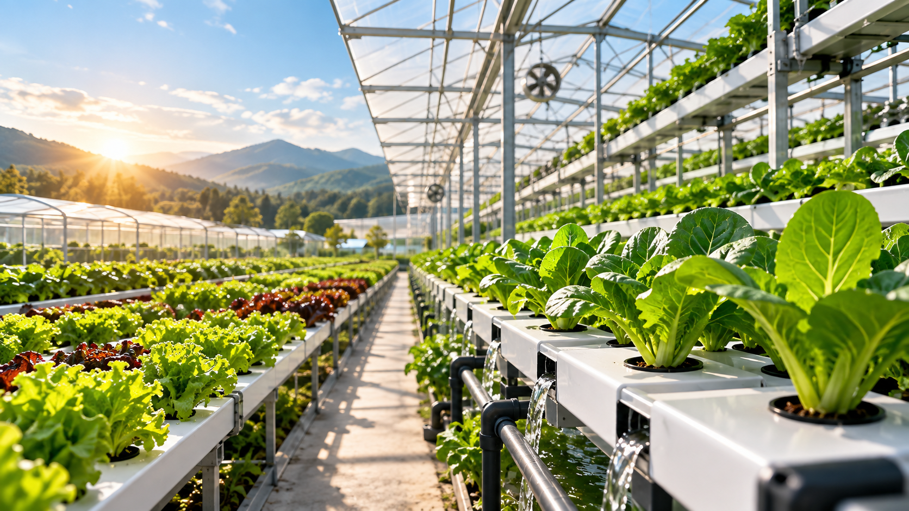
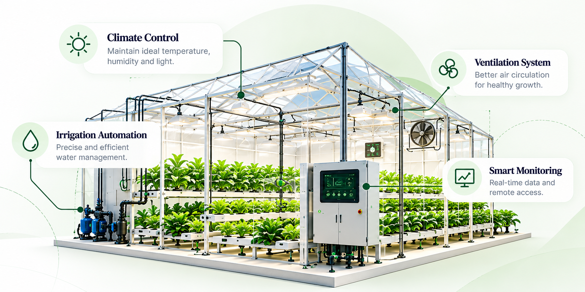
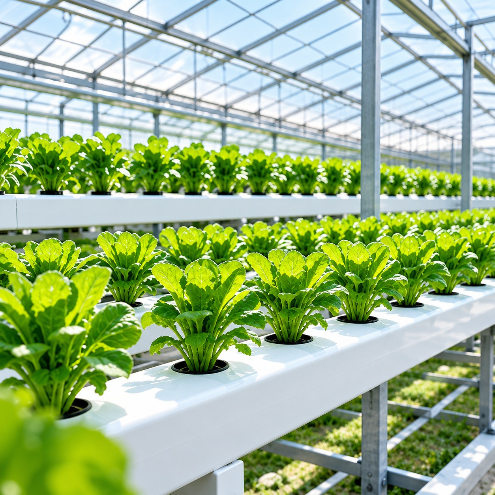

How Protected Farming is Transforming Modern Agriculture
Discover how protected farming helps achieve higher yields, better quality and year-round production while reducing climate risks.
Discover practical guides, technical insights, and high-value strategies for modern protected farming.
Explore Articles
Discover how protected farming helps achieve higher yields, better quality and year-round production while reducing climate risks.

Explore high-value crops that thrive in protected environments and offer better market returns.

A detailed comparison to help you choose the right growing system for your goals.

Learn how smart automation improves efficiency, reduces manual work and ensures consistent crop quality.

Explore the latest innovations and technologies shaping the future of farming.

Learn practical steps to reduce environmental impact and build a more resilient food system.

Understand the different types of greenhouse structures and which one suits your needs.

A complete guide to maintaining the right nutrient balance for healthier and more productive crops.